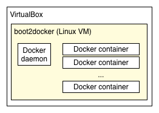

App Engine Managed VMs rely on Docker to develop and deploy applications to the cloud. Docker is a portable, lightweight runtime and a cloud service for sharing applications, and is a Linux-only technology. If you are not developing on Linux, you need a Linux VM to use Docker. These instructions use VirtualBox, a cross-platform virtualization application, to host a Linux VM.
The Google Cloud SDK provides a local App Engine development server that provides the same environment locally as in the cloud—it distributes incoming requests, provides APIs, and so on.

The instructions on this page show you how to install and configure the following required software:
boot2docker is a pre-packaged Linux VM image for
VirtualBox. This image contains a docker daemon installation,
as well as the boot2docker command line tool.docker command line tool talks to the docker
daemon running inside VirtualBox.gcloud command line tool. All functionality is
available through the gcloud preview app sub-commands.Download Dart
and unzip the ZIP file, which creates a dart directory.
Put dart/dart-sdk/bin in your PATH.
On Mac OS:
$ export PATH=$PATH:<installation directory>/dart/dart-sdk/bin
On Windows:
> set PATH=%PATH%;C:<installation directory>/dart/dart-sdk/bin
On Linux:
$ export PATH=${PATH}:<installation directory>/dart/dart-sdk/bin
Below are the instructions for , , or .
Run the boot2docker installer from Github. This downloads and installs the following tools on your development machine:
Applications folder)boot2docker command (installed in /usr/local/bin)docker command (installed in /usr/local/bin)Run the following commands to configure boot2docker.
$ mkdir ~/.boot2docker $ echo 'ISOURL = "https://github.com/boot2docker/boot2docker/releases/download/v1.3.0/boot2docker.iso"' > ~/.boot2docker/profile $ boot2docker init
$ boot2docker upWhen successful, the command prints some setup information. You don't need to type these commands if you use the command in the following section.
Call the following script to set the required environment
variables: DOCKER_TLS_VERIFY, DOCKER_HOST, and DOCKER_CERT_PATH.
$ $(boot2docker shellinit)
Run the following command to pull a number of Docker
images required for App Engine Managed VMs.
The docker pull command can take awhile.
$ docker pull google/docker-registry
$ docker imagesThis command lists a number of images.
$ docker run google/dart /usr/bin/dart --version
C:\Program Files\Oracle\VirtualBox\. Note: On Windows, the docker commands below should be run inside the VM as the installation process does not install a Windows docker command line tool.
Run the following commands to configure boot2docker.
> mkdir "%USERPROFILE%\.boot2docker" > echo ISOURL = "https://github.com/boot2docker/boot2docker/releases/download/v1.3.0/boot2docker.iso" > "%USERPROFILE%\.boot2docker\profile" > "%ProgramFiles%\Boot2Docker for Windows\boot2docker" init
Run the following command to launch boot2docker.
> "%ProgramFiles%\Boot2Docker for Windows\boot2docker" up
When successful, the output should include lines similar to the following:
Docker client does not run on Windows for now. Please use "C:\Program Files\Boot2Docker for Windows\boot2docker.exe" ssh to SSH into the VM instead.
DOCKER_TLS_VERIFY, DOCKER_HOST, and DOCKER_CERT_PATH.
Unfortunately, boot2docker does not support Windows that well here.
First, run the following command:
> "%ProgramFiles%\Boot2Docker for Windows\boot2docker.exe" shellinit
This prints three lines like this:
export DOCKER_HOST=...
export DOCKER_CERT_PATH=...
export DOCKER_TLS_VERIFY=...
If you are using the normal Windows shell, take each of these commands
and replace export with set. For example, for DOCKER_TLS_VERIFY:
set DOCKER_TLS_VERIFY=1
If you are using a cygwin shell, you can use the following script:
$ $(boot2docker shellinit)
Run the following command to pull a number of Docker
images required for App Engine Managed VMs.
The docker pull command can take awhile.
> "%ProgramFiles%\Boot2Docker for Windows\boot2docker.exe" ssh $ docker pull google/docker-registry
Check to make sure that you have some images:
$ docker images
This command lists a number of images.
Run the following command to print the version of the Dart VM.
$ docker run google/dart /usr/bin/dart --version
The output will look something like the following:
Dart VM version: 1.7.2 (Tue Oct 14 12:12:42 2014) on "linux_x64"
Leave the boot2docker VM:
$ exit
Note: You need a 64-bit Linux system to run Dart on App Engine Managed VMs.
See Download VirtualBox for Linux hosts.
Here are the instructions for installing Docker on Linux:
$ sudo wget https://github.com/boot2docker/boot2docker-cli/releases/download/v1.3.1/boot2docker-v1.3.1-linux-amd64 -O /usr/local/bin/boot2docker $ sudo chmod 755 /usr/local/bin/boot2docker $ sudo wget https://get.docker.io/builds/Linux/x86_64/docker-latest -O /usr/local/bin/docker $ sudo chmod 755 /usr/local/bin/docker
Run the following commands to configure boot2docker:
$ mkdir ~/.boot2docker $ echo 'ISOURL = "https://github.com/boot2docker/boot2docker/releases/download/v1.3.0/boot2docker.iso"' > ~/.boot2docker/profile $ boot2docker init $ boot2docker up
Run the following command to set the required environment
variables: DOCKER_TLS_VERIFY, DOCKER_HOST, and DOCKER_CERT_PATH.
$ $(boot2docker shellinit)
Run the following command to pull a number of Docker
images required for App Engine Managed VMs.
The docker pull command can take awhile.
$ docker pull google/docker-registry
$ docker imagesThis command lists a number of images.
$ docker run google/dart /usr/bin/dart --versionThe output will look something like the following:
Dart VM version: 1.7.2 (Tue Oct 14 12:12:42 2014) on "linux_x64"
You need an App Engine project to develop and deploy an application to App Engine. Go to the Google Developer Console and follow the instructions for creating a project. Give it a unique name.
You need a Google account, like gmail, to use the Google Cloud SDK.
You need to grant certain permissions to Google Cloud SDK
to use the tools included in it.
During the setup instructions below,
you use the gcloud auth login command to login into your gmail account.
The command launches a browser with a list of permissions
for you to grant.
The list is sufficient to use any of the tools included in the Cloud SDK.
Your credentials do not expire (that is, you do not need to re-run this
command), but you can repeat this process as many times as you’d like to
add more accounts. Use gcloud config set account to set the active one.
Now login, set the project, and install the Managed VMs support. Replace my-project-name with your project name chosen in Set up a cloud project.
$ gcloud auth login $ gcloud config set project my-project-name $ gcloud components update app
$ gcloud config listThe output should look something like this:
[core] account = mem@example.com project = my-project-name user_output_enabled = True
Your development environment is set up and you are ready to write some code.
Now, you can create and run HelloWorld.